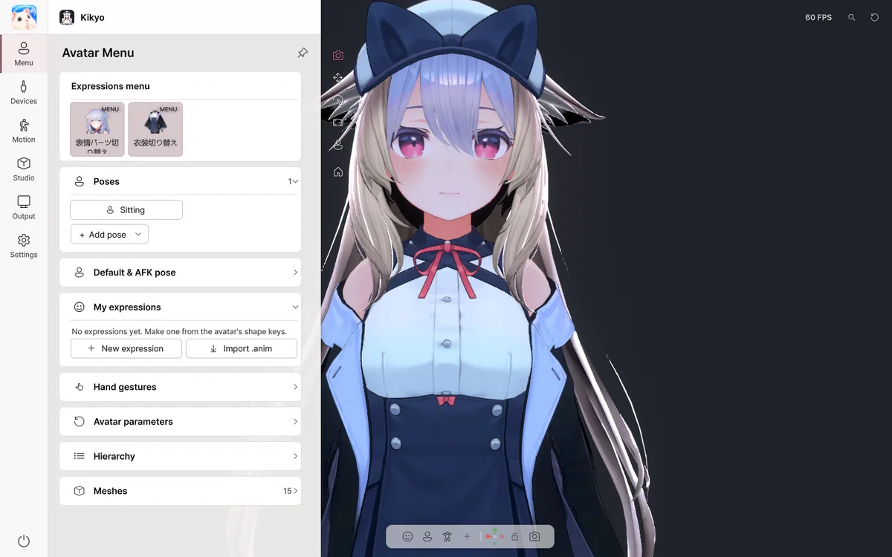

4. Main window
The v2.0.0 app window remains the editable scene view. Even when a studio camera is on air, you can use this window to inspect and adjust avatars, lighting and props.

Finding each setting
| Left menu | What its controls actually affect |
|---|---|
| Menu | Expression menu, avatar toggles, saved faces and gestures of the selected character. Chapter 5 |
| Input / Devices | Which camera, mic, phone or tracker supplies data to each body part. Chapter 6 |
| Motion | Face, eyes, arms, fingers, body, AFK, smoothing and lip-sync behavior. Chapter 7 |
| Studio | Scenes, avatar placement, props, room, lighting, cameras and effects. Chapter 8 |
| Output | Spout2, NDI, virtual camera, screen sharing, recording and remote session. Chapter 9 |
| Settings | Performance, window, hotkeys, language, files, updates and diagnostics. Chapter 10 |
Pin a drawer with the pin icon to stop it closing when clicking elsewhere. The mouse wheel scrolls settings over the drawer, but zooms the scene view outside it. If the camera moves unexpectedly, first check where your cursor was.
Scene view versus the on-air picture
- Moving the bottom-toolbar camera changes your editing point of view.
- When a studio camera is on air, OBS/NDI receives that saved camera picture instead. You can move behind the character to adjust lights without automatically broadcasting that backstage view.
- If Scene view itself is on air, your camera edits also change what viewers see. Verify the active source in Studio cameras and Output.
- Always verify the receiving application's program monitor, particularly after changing camera, aspect ratio, background transparency or effects.
Bottom toolbar: what the controls change
- Face / Upper body / Full body quickly adjust framing distance and angle relative to the selected avatar. Face is useful for lip sync; upper body for chat streams; full body for poses.
- + Save view stores your current camera position, direction and lens as an avatar-specific preset. Selecting it later restores that composition.
- Camera lock prevents accidental scene-view mouse movement; it does not freeze your avatar's tracking or a separate studio broadcast camera.
- None / Free / Orbit changes how your mouse moves the scene view. Free moves your look direction; Orbit circles the selected avatar. These are different from the Studio Camera's independent position/aim methods.
- Field of View (FOV): decreasing it magnifies the subject and shows less background; increasing it shows more scene. Mouse movement speed adjusts how far/faster the view travels for the same physical mouse movement.
- Toolbar opacity changes how faint idle controls look (around 60% by default); hovering reveals them more strongly. Right-click empty toolbar space for opacity and placement settings.
- Quick Actions let you pin frequently used avatar toggles, poses and expressions to the toolbar. Which parameter they affect depends on the currently selected avatar's menu.
Clean view, reset and exit
- F1 hides or restores the app's interface when Avatar Live is the focused window. It is not a substitute for transparent-background Spout2/NDI.
- Reset can restore avatar physical state after hair or tails become stuck; it is not an asset re-export function.
- The window X may quit or minimise to tray depending on Settings. While output is running, the program can keep streaming from the tray; choose Quit explicitly to stop it completely.
- Use the search icon in Settings to jump directly to AFK, gaze, hotkeys, Spout2 and other controls without expanding every drawer.